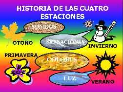
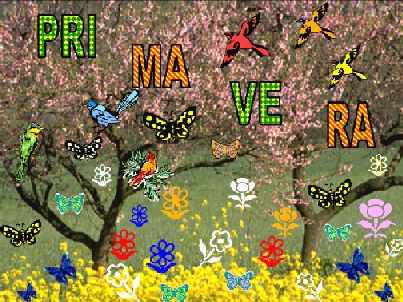
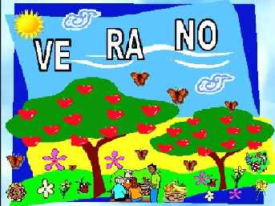
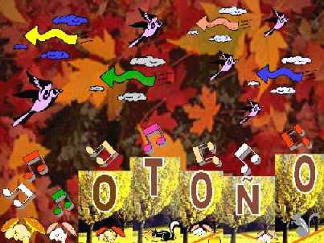
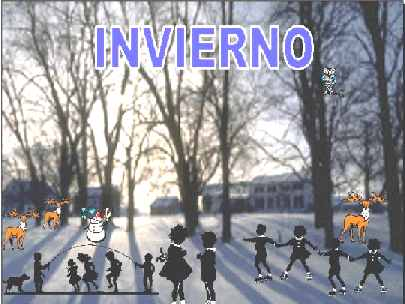
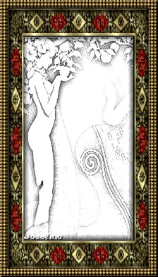
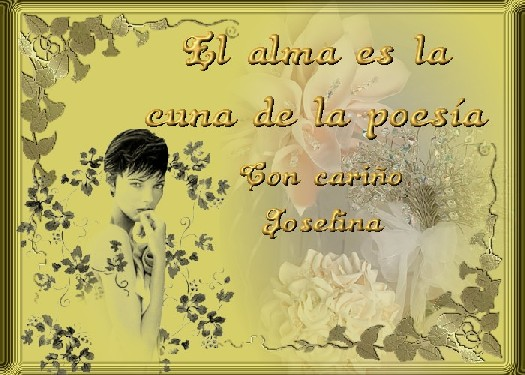

GORJEOS
PRIMAVERALES
GORJEOS
PRIMAVERALES
| Autor: Josefina Algar Aranda |
En mi sepultura: ¡Colocadme mis poesías!
Así grita el alma del poeta,
cuando la muerte se le acerca.
Observa y ve que llega su atardecer.
con todos sus poemas para leerlos.
Poemas compuestos de versos:
alegres, tristes, opuestos,
llenos de gozo, de amores eternos.
Escritos con alma de poeta,
espíritu de sus adentros.
Espíritu de Halloween para unos.
Espíritu de Reencarnación para otros.
Espíritu de Eternidad para todos.
El poeta, sigue y sigue escribiendo,
quiere que se lean sus versos.
Quiere que en su lápida le escriban,
el último que ha compuesto.
Las almas poetas desnudas están,
cantando sus poesías,
Poesías... ¡Hermoso cantar!
CUENTO ADIVINANZA: "LAS CUATRO ESTACIONES"
 |
Parece ser, según cuenta mi leyenda, en un poblado lejano, muy lejano llamado: "Año" vivían una niña y tres niños. Eran buenos, amables y de mucha paciencia.
Los niños eran felices: jugaban en la plaza, iban a la escuela y siempre que podían visitaban la Biblioteca.
Un día con perfume de flor, radiante de color y trinar de pajarillo, un libro de la Biblioteca sonrió a la niña y le hizo un guiño.
La niña quiso tener por nombre, el mismo nombre que el Libro.
Dime: ¿Cómo se llama la niña; la niña perfume de flor, radiante de color y trinar de pajarillo?.
¡PRIMAVERA!
 |
Uno de los tres niños; alegre, simpático y juguetón, en una lámina de dibujo, dibujó un gran sol. Lo llevó a la Biblioteca y en una estantería lo colgó.
Los libros empezaron a tener mucho calor. Sabían que uno de ellos se convertiría en estación. Estación que cantan los grillos por la noche y durante el día brilla el Sol.
Libro y niño ya tienen el nombre de estación. Estación esperada por todos para disfrutar del calor.
Dime cómo se llama el niño; el niño simpático, alegre y juguetón, el niño, de tanto calor.
¡VERANO!
 |
En una estantería un poco olvidada, había un libro muy inquieto, sus hojas eran marrones y amarillas, y a veces se caían.
Cansado de tanto movimiento, fue a instalarse, acompañado por la fuerza del viento, en la estantería de los amigos del tiempo.
Sus compañeros lo empezaron a ver, a oír y a oler. Todos juntos dijeron: “¡Qué hermoso compañero!”. ¡Qué venga el niño, qué acaricia el viento, qué juega con las hojas de los árboles
y qué empieza a oler el invierno!
Dime: ¿Cómo se llama el niño, el niño del viento.
¡OTOÑO!
 |
El último niño que quedaba sin nombre de estación, estaba: triste, solo y a penas tenía calor.
Vestido con abrigo, bufanda, gorro, guantes y botas de lana, fue a la Biblioteca y buscó en la estantería, el libro que le faltaba.
El Libro le esperaba con gran impaciencia. Sin dudar ninguno de los dos: Niño y Libro se deslizaron por el suelo rompiendo la fina capa de hielo, característica de la estación.
Se abrazaron muy apretados y se dieron mucho calor. Fueron en busca del calor de la lumbre que tenían los dos dentro de su corazón.
Dime: ¿Cómo se llama el niño, el niño que no tenía calor, pero tenía el corazón lleno de Amor.
¡INVIERNO!
 |
No sé, si así fue o quizá pudo ser, pero sí sé, que los cuatro niños siguieron viviendo en su poblado llamado: “Año”
Y cada año nos siguen visitando.
Siempre en primavera. Siempre en otoño. Siempre en invierno. Siempre en verano. Siempre, pero siempre, en cualquier día del año.
¡Qué no te falte jamás un libro en tus manos!
|
Escultura de Rosita Acosta |
Días entrañables de mi niñez. Recuerdo con tristeza y con dulzura, el día en que descubrí la verdad de los Reyes Magos. Mi hermano Juan Daniel, con gran entusiasmo, no cesaba de darme órdenes y sugerencias para la noche de Reyes. Era un ir y venir por toda la casa. Llegó la gran noche de la ilusión, la noche mágica. La noche de Reyes, la noche esperada. Los Reyes pasaron por nuestra casa. Desperté y encontré mis zapatitos limpios, que había dejado en la repisa de la ventana, llenos de dulces y también encontré la cocinita que les había pedido en mi carta. ¡Qué alegría! ¡Qué ilusión!. Mis papás nos explicaban que los Reyes Magos solían pasar por todas las casas para dejar los juguetes y regalos que los niños habían pedido en sus cartas. Pasaron las fiestas y de nuevo volví a la escuela. De pronto, como una ráfaga, a mi pensamiento llegó una pregunta, que no encontré solución. De camino hacia casa, le pregunté y su respuesta sincera así fue: Llegué a casa con cara de enfado y tristeza.
Entonces mi mamá me abrazó y me cubrió de besos, mis frías mejillas coloradas por el frío del invierno. Fue tan preciosa y hermosa la historia que me contó, que los llantos se convirtieron en una pequeña oración. No por el paso del tiempo, éste, mi recuerdo de infancia desapareció. Niños con corazón de niño. Porque, hoy... Con el cariño de siempre Invierno del 56. Navidad y Reyes.
Esta narración la escribí en el 4 de diciembre del 2006 como motivación para los niños del Aula de Lengua.
|
|
NOCTURNO
Ya, la noche empieza a caer. ¡Es Nocturno, que asoma y aparece! Nocturno acontece todas las noches, Nocturno me conoce, Ya, la Noche empieza a caer. |
 |
OTOÑO: “MENSAJERO DE LOS SENTIDOS”
Mi vista observa Mis oídos atentos Mi gusto exquisito Mi piel queda envuelta Mi olfato se deleita Tu llegada me cobija Eres tú, Otoño; Son hermosas tus acciones, Mi otoño querido, mi otoño amado.
|
Inmaculada Madre del Cielo
En mi perfil más acogedor, Con delicadeza y amor Él quiso plasmar en el lienzo Reflejó en su obra, Inmaculada Concepción:
|
. . .
E-mail: josefinaalgar@yahoo.es
 |
Josefina se ha jubilado como maestra, profesión
que desplegó por más de 30 años, cuando comenzó
a ejercer la docencia...
Jubilarse, lo deseaba y no lo deseaba... pues la escuela, le ha llenado de vida.
"Los niños me animaron a seguir escribiendo. Todos los lunes cuando
llegaba al aula, lo primero
que me preguntaban era:
- Josefina; ¿Tienes algún poema nuevo?
Si les decía que sí, no veas sus caritas cómo respondían...
-Léelo, cuélgalo en el corcho.
Es una actividad recíproca, pues con ella también les motivaba
a que escribieran".
Es casada, sin hijos y vive en un pueblecito de la provincia de Huesca (Aragón-
España) llamado
Tamarite de Litera.
Reservados todos los derechos.